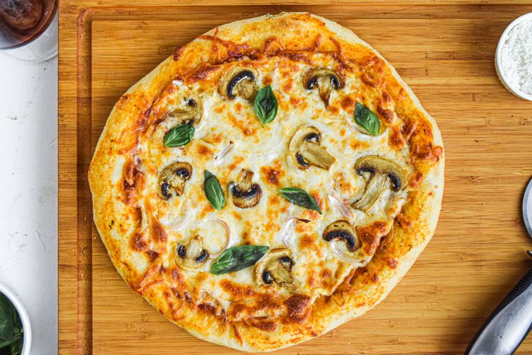

Classic Homemade Pizza

Description
This classic homemade pizza features a crisp, chewy crust,
rich tomato sauce, gooey mozzarella, and your favorite toppings. It's the perfect recipe for family pizza night or impressing guests with a made-from-scratch meal.
Ingredients
- For the Dough:
2 ¼ tsp (1 packet) active dry yeast
1 ½ cups warm water (110°F / 45°C)
3 ½ cups all-purpose flour
2 tbsp olive oil
1 tsp sugar
1 tsp salt
- For the Sauce:
1 up canned crushed tomatoes
1 tbsp olive oil
1 clove garlic, minced
½ tsp dried oregano
Salt and pepper, to taste
- For the Toppings:
2 cups shredded mozzarella cheese
Fresh basil leaves (optional)
Toppings of choice: pepperoni, mushrooms, bell peppers, olives, onions, etc.
Olive oil (for brushing crust)
Steps
- Make the Dough
In a bowl, dissolve yeast and sugar in warm water. Let sit for 5–10 minutes until foamy.
Add flour, salt, and olive oil. Mix until a dough forms.
Knead on a floured surface for 7–10 minutes until smooth and elastic.
Place dough in a greased bowl, cover, and let rise in a warm place for 1 hour or until doubled in size.
- Prepare the Sauce
Heat olive oil in a saucepan over medium heat. Sauté garlic until fragrant.
Add crushed tomatoes, oregano, salt, and pepper. Simmer for 10–15 minutes. Set aside to cool.
- Assemble the Pizza
Preheat oven to 475°F (245°C). Place a pizza stone or baking sheet in the oven to heat.
Punch down the dough and divide into two balls (for thinner crusts). Roll out on a floured surface.
Transfer to parchment paper or a pizza peel. Spread sauce over dough, then add cheese and toppings.
Brush edges with olive oil.
- Bake
Carefully place pizza on the hot stone or baking sheet.
Bake for 10-12 minutes or until the crust is golden and the cheese is bubbly.
- Serve
Let cool for a few minutes before slicing. Garnish with fresh basil if desired. Enjoy!
Back To Homepage